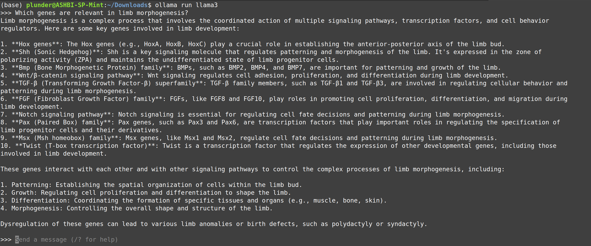
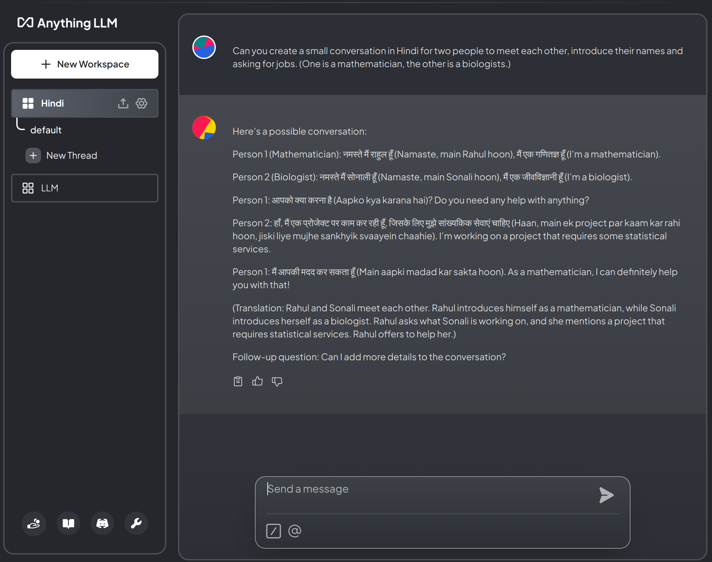
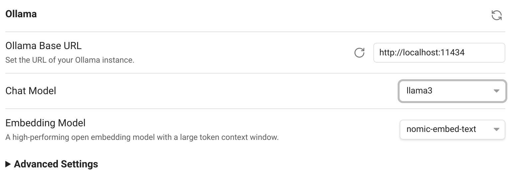
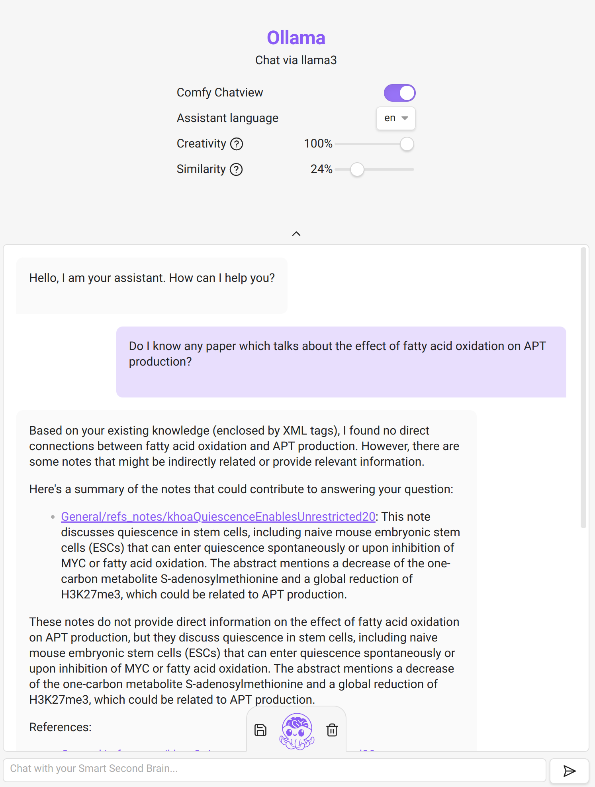

We all know about the potential of AI/LLMs right now.
Thanks to LLama3, there is now a quite powerful option for local use.
It is mind-blowing how much knowledge fits into just 5 GB.
That's why I wrote this short post of how to install it, so that you can try it out yourself. (Provided your computer has a sufficiently large GPU.)
Download and install Ollama from ollama.com/download.
Open a terminal and type:
ollama run llama3
Now you can chat in the terminal. 🎉

OLLAMA_HOST=127.0.0.1:11434 ollama serve
11434 is not free, change it to another number).Ollamahttp://127.0.0.1:11434 (use same number as before)llama3:latest4096 (or smaller)AnythingLLM Built-In for Transcription Provider and Embedder Preferences.
Smart Second Brain
llama3 as Chat Model in the plugin configuration:

OLLAMA_HOST=127.0.0.1:11434 OLLAMA_ORIGINS="app://obsidian.md*" ollama serve
11434 might be used, try another port in that case and change the plugin settings accordingly!)Smart Second Brain: Open Chat.llama3, the right port (as above) and nomic-embed-text.
Example of using Smart Second Brain on my notes. It is a bit hit & miss to be honest. One can play with the creativity/similarity sliders to get better results. But the output is often just wrong. 🙅♀️